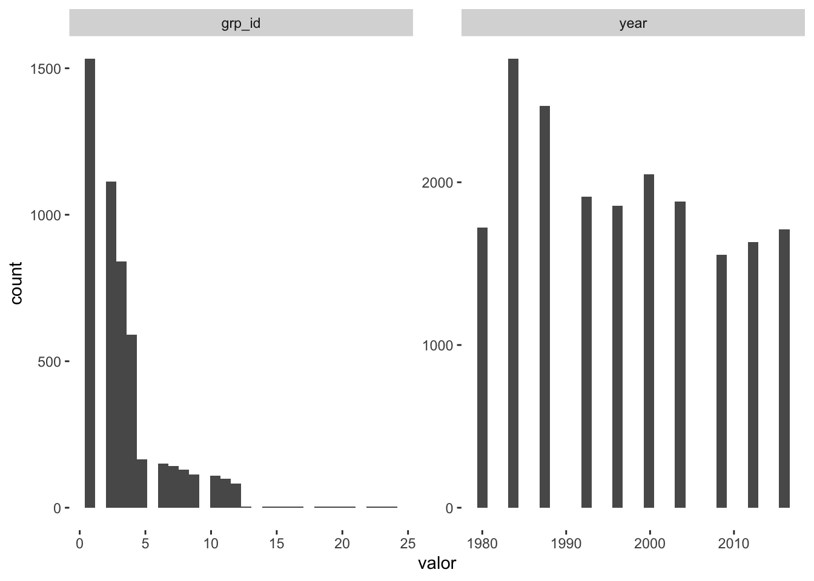
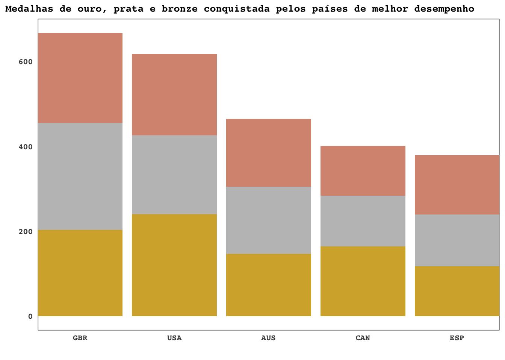
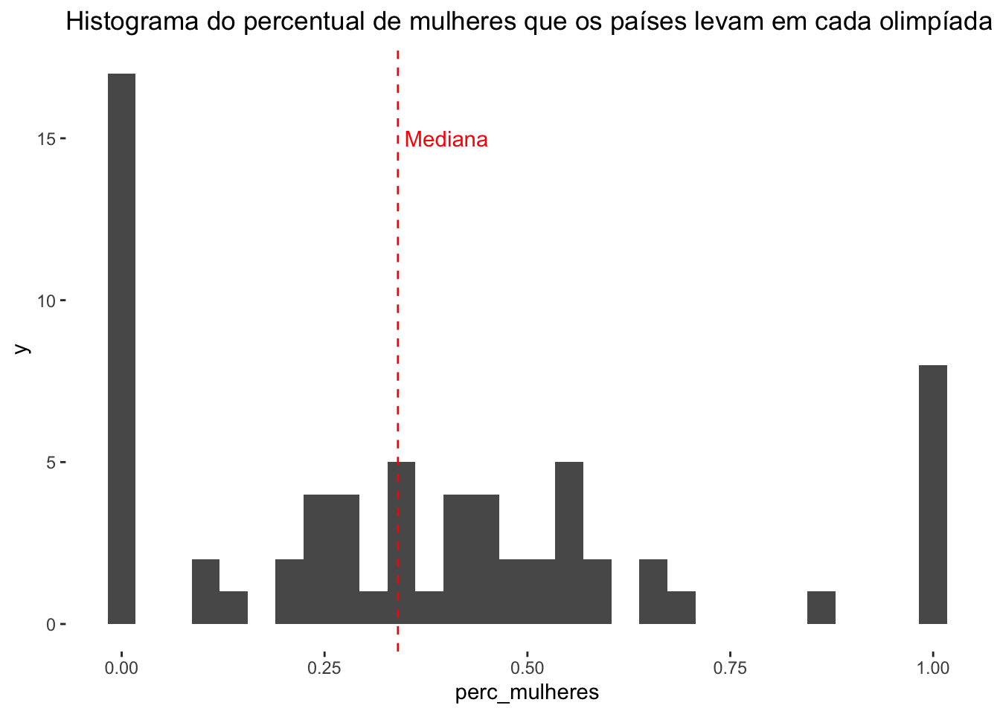

Olá, pessoal!
Se você já é um entusiasta de ciência de dados, provavelmente já ouviu falar do TidyTuesday. Se está iniciando, este é um ótimo lugar para conseguir dados reais para praticar e criar um portfolio. O tidytuesday é um projeto semanal do R for Data Science Community, que tem como objetivo ajudar as pessoas a aprender e praticar a análise de dados em R usando o pacote Tidyverse, conheça aqui: https://github.com/rfordatascience/tidytuesday.
Cada semana, é lançado um novo conjunto de dados, geralmente em formato de planilha, que pode ser baixado gratuitamente. A comunidade é então convidada a explorar, visualizar e analisar esses dados usando as ferramentas do tidyverse, como o ggplot2 para gráficos e o dplyr para manipulação de dados.
Base de dados
Hoje vamos dar uma olhada na base do início de agosto de 2021, quando o TidyTuesday lançou um conjunto de dados fascinante sobre as paraolimpíadas dos anos 1980 até 2016. O conjunto de dados inclui informações sobre características dos atletas, o país de origem, o tipo de prova, entre outras variáveis.
Importação
Para começar vamos carregar os dados! Lembrando de manter a boa prática de iniciar o script carregando as bibliotecas necessárias.
dados_olimpiadas <- read_csv("https://raw.githubusercontent.com/rfordatascience/tidytuesday/master/data/2021/2021-08-03/athletes.csv")Rows: 19547 Columns: 10
── Column specification ────────────────────────────────────────────────────────
Delimiter: ","
chr (8): gender, event, medal, athlete, abb, country, type, guide
dbl (2): grp_id, year
ℹ Use `spec()` to retrieve the full column specification for this data.
ℹ Specify the column types or set `show_col_types = FALSE` to quiet this message.O bacana da função read_csv() é que ela já dá uma descrição geral com nome das variáveis e tipo. No caso, temos 8 variáveis tipo chr ou character (textos) e 2 tipo dbl ou double (numéricos).
Antes de começar, outra boa prática é conhecer os dados. Quais colunas possui? Como está o preenchimento das variáveis? Existem dados faltantes (NAs)?
gender event medal athlete abb country grp_id type year guide
144 0 0 435 49 14428 14428 0 0 19494 No tidytuesday os dados costumam vir mais arrumados, porém no mundo real é comum encontrarmos erros no preenchimento, sejam eles sistemáticos (por exemplo: a ferramenta que mede velocidade dos competidores falha e traz valores muito grandes ou negativos), ou também erros de preenchimento (exemplo: alguém que preencheu errado o campo de medalha e colocou por exemplo “metal” ao invés de “prata”).
No repositório desta base, está descrito o que cada coluna representa. Te convido para escrever como lição de casa o código que checa as variáveis categóricas em busca de nomes estranhos que não condizem com o que deveria estar naquela variável. Como incentivo, deixo aqui o check de variáveis numéricas.
dados_olimpiadas %>%
select(where(is.numeric)) %>%
pivot_longer(1:2, names_to = 'variaveis', values_to = 'valor') %>%
ggplot(aes(x = valor)) +
geom_histogram() +
facet_wrap(~variaveis,scales = 'free') +
theme(panel.background = element_rect(fill = "white")) 
Explorando e visualizando dados para Natação!
Para não ficar um post massivo, vamos focar em natação.
Ao analisar esses dados, podemos responder várias perguntas interessantes. Por exemplo, qual país obteve mais medalhas na natação nos Jogos Olímpicos de 2021? Há alguma diferença significativa na quantidade de medalhas conquistadas entre os atletas homens e mulheres?
Países com mais metalhas
Para criar um gráfico mostrando os países com mais medalhas, primeiro é necessário trabalhar os dados para criar uma base onde tenha a contagem de medalhas por país e por tipo de medalha!
# Fazendo uma contagem de medalhas de natação por país:
paralympic_total <- dados_olimpiadas %>%
# Filtrando medalhas de natação (Swimming)
filter(type == "Swimming") %>%
# Contando quantas medalhas tem por país (abb),
# ordenando pelos maiores números!
count(abb, sort = TRUE)
# Fazendo uma contagem de medalhas de natação por país e tipo de medalha:
paralympic_byMedal <- dados_olimpiadas %>%
# Filtrando medalhas de natação (Swimming)
filter(type == "Swimming") %>%
# Contando quantas medalhas tem por país (abb) e tipo de medalha,
# ordenando pelos maiores números!
count(abb, medal)
paralympic_swimming <- paralympic_byMedal %>%
# unindo as duas bases criadas acima,
# usando a coluna "abb" como chave
left_join(paralympic_total, by = "abb") %>%
# renomeando as colunas
rename(number = n.x, total_medals = n.y)
# Uma "olhada" na base criada!
paralympic_swimming |>
glimpse()Rows: 174
Columns: 4
$ abb <chr> "ARG", "ARG", "ARG", "AUS", "AUS", "AUS", "AUT", "AUT", "…
$ medal <chr> "Bronze", "Gold", "Silver", "Bronze", "Gold", "Silver", "…
$ number <int> 9, 5, 10, 160, 147, 158, 2, 2, 4, 1, 7, 1, 13, 6, 12, 9, …
$ total_medals <int> 24, 24, 24, 465, 465, 465, 8, 8, 8, 8, 8, 1, 31, 31, 31, …Utilizando essa base com a contagem de medalhas, podemos filtrar os 5 países com mais medalhas:
top5 <- paralympic_total |>
# fatiar: apenas as primeiras 5 linhas
slice(1:5) |>
# retornar como um vetor a coluna abb
pull(abb)
table_top5 <- paralympic_swimming %>%
# filtrar os países do top 5
filter(abb %in% top5) %>%
# transformar a coluna abb em fator,
# para facilitar a ordenação no gráfico
mutate(abb = factor(abb, levels = top5),
medal = factor(medal, levels = c("Bronze", "Silver", "Gold"))) Com os dados preparados, podemos fazer o gráfico! Mas antes disso, vamos salvar as configurações de tema do gráfico em um objeto, para utilizarmos depois e deixar o código do gráfico mais fácil para ler!
tema_olimpiadas <-
theme_minimal() +
theme(
legend.position = "none",
plot.title.position = "plot",
plot.title = element_text(
family = "mono",
face = "bold",
size = 10
),
panel.grid.major.x = element_blank(),
panel.grid.minor.x = element_blank(),
panel.grid.major.y = element_blank(),
panel.grid.minor.y = element_blank(),
axis.text = element_text(
family = "mono",
face = "bold",
size = 8
),
panel.background = element_rect(fill = "white")
) Agora sim, vamos ao gráfico!
table_top5 %>%
ggplot(aes(x = abb, y = number, fill = medal)) +
geom_col() +
scale_fill_manual(values = c("#D89581", "#C0C0C0", "#D4AF37")) +
scale_x_discrete(expand = c(0, 0)) +
labs(x = "",
y = "",
title = "Medalhas de ouro, prata e bronze conquistada pelos países de melhor desempenho") +
tema_olimpiadas
A Grã-Bretanha é o país com mais medalhas no total, porém os Estados Unidos é o país com mais medalhas de ouro!
Apesar de algumas alterações que fiz, os créditos deste gráfico de barras são da Erin, professora que vocês podem encontrar aqui: https://github.com/efranke22.
Diferença de medalhas por gênero
Continuando, podemos ver a diferença entre a quantidade de medalhas conquistadas entre os atletas homens e mulheres. Para isso, veremos primeiro o histograma do percentual de mulheres que os países levam em cada olimpíada, em seguida o box plot das medalhas conquistadas por cada um, agrupado também pelo tipo de medalha.
Uma observação: o gênero misto foi removido, porque ele está na base devido a algumas provas serem mistas e não porque os participantes são não-binários. Com isso, perdemos 21 linhas.
Vamos então preparar a base de dados, calculando o percentual de mulheres por país:
dt_perc_gender <- dados_olimpiadas %>%
# Filtrar para Natação
filter(type == "Swimming") %>%
# Filtrar: remover linhas onde o gênero seja "misto" (ex: duplas de homens e mulheres)
filter(gender != 'Mixed') %>%
# Deixar apenas uma linha para a combinação atleta/ano/país/gênero
distinct(abb, year, gender, athlete) %>%
# Contar quantas pessoas participaram por país e gênero
count(abb, gender) %>%
# Alterar a base para formato longo
pivot_wider(names_from = gender, values_from = n) %>%
# Substituir NA por 0 nas colunas Woman e Men
mutate(across(any_of(c("Women", "Men")), ~ ifelse(is.na(.), 0, .))) %>%
# Agrupar por país
group_by(abb) %>%
# Calcular o porcentual de mulheres
summarize(perc_mulheres = mean(Women / (Women + Men))) %>%
# Ordenar de forma decrescente por perc_mulheres
arrange(desc(perc_mulheres))
linha_mediana <- median(dt_perc_gender$perc_mulheres)Agora podemos criar o histograma:
dt_perc_gender %>%
ggplot(aes(x = perc_mulheres)) +
geom_histogram() +
geom_vline(
mapping = aes(xintercept = linha_mediana),
linetype = 2,
color = 'red'
) +
annotate(
"text",
x = linha_mediana + 0.06,
y = 15,
label = "Mediana",
color = 'red'
) +
ggtitle("Histograma do percentual de mulheres que os países levam em cada olimpíada") +
theme(panel.background = element_rect(fill = "white")) 
Como vimos no histograma, muitos países nem enviam mulheres para as olimpíadas e os que enviam, tem em média 34% de mulheres na composição do time. Sendo assim, essa diferença impacta na diferença que vemos na quantidade de medalhas conquistadas por gênero.
Vamos explorar estes dados em um boxplot:
dados_olimpiadas %>%
mutate(medal = factor(medal, levels = c("Bronze", "Silver", "Gold"))) |>
# Filtrar para Natação
filter(type == "Swimming") %>%
# Filtrar: remover linhas onde o gênero seja "misto"
filter(gender != 'Mixed') %>%
# Contar quantas pessoas participaram por país, gênero e tipo de medalha
count(abb, gender, medal) %>%
ggplot(aes(y = n, fill = gender, x = medal)) +
geom_boxplot() +
labs(title = "Box-plot das medalhas conquistadas por tipo de medalha e gênero em cada país",
y = "Quantidade de medalhas",
x = "Tipo de medalha",
fill = "Gênero") +
theme(panel.background = element_rect(fill = "white")) +
scale_fill_brewer(type = "qual")
Vamos para a modelagem!
Agora, pensando em usar modelos, podemos brincar de criar métricas, pensando em como prever se um atleta conquistará medalhas na olimpíada seguinte. Opções diretas de variáveis são: quantas medalhas já ganhou, de quantas olimpíadas já participou, proporção de medalhas por tipo, e uma métrica de quantidade de medalhas por olimpíada (chamarei de medal_olympics_kpi - kpi vem do inglês Key Performance Indicators e é uma sigla bem conhecida no meio da análise de dados para se referir a indicadores de performance), por fim, teremos a variável de gênero.
Um exercício bom de fazer aqui é observar correlação entre as variáveis resposta. As contagens de medalhas são correlacionadas entre si, pois por exemplo, quanto mais medalhas ganhas no total, maior serão os valores nas contagens de medalha por tipo, por isso que decidi utilizar proporção. A quantidade de olimpíadas que o atleta já participou também tem certa relação com sua idade, o que é bom, porque não temos a informação da idade na base.
# variável resposta : última olimpíada de cada atleta
resposta <- dados_olimpiadas %>%
# Remover linhas onde não temos o nome do atleta
filter(athlete != '-') %>%
# Filtrar para natação
filter(type == "Swimming") %>%
# Filtrar por ano
filter(year == 2016) %>%
# Contar quantas medalhas cada atleta teve
count(athlete, sort = TRUE) A variável resposta é a quantidade de medalhas conquistadas por atleta nas olimpíadas de natação de 2016. A base vai contar com informações dos atletas e das suas participações anteriores.
base <- dados_olimpiadas %>%
# Unindo a tabela resposta a base total para manter apenas
# os atletas dos quais conseguimos montar variável resposta
inner_join(resposta, by = 'athlete') %>%
# Removendo dados de 2016 (pois deste ano tiramos a variável resposta)
filter(year != 2016) %>%
# Remove a coluna n (que veio ao juntar as bases)
select(-n) %>%
# agrupando por atleta
group_by(athlete) %>%
# montando variáveis independentes para cada atleta
summarize(total_medalhas = n(),
ouro = sum(medal == 'Gold'),
prata = sum(medal == 'Silver'),
bronze = sum(medal == 'Bronze'),
total_olympics = n_distinct(year),
medal_olympics_kpi = n()/n_distinct(year),
gender = unique(gender[gender != 'Mixed']),
n_eventos = n_distinct(event)) %>%
mutate(ouro = ouro/total_medalhas,
prata = prata/total_medalhas,
bronze = bronze/total_medalhas)
base_final <- base %>%
# unir novamente com a base de resposta
inner_join(resposta, by = 'athlete') %>%
# renomear coluna n para y
rename(y = n) %>%
# desagrupar
ungroup() %>%
# remover a coluna com nome
select(-athlete)Com isto estamos prontos para checar o quanto essas variáveis podem prever quantas medalhas um atleta conquistará em 2016. Por se tratar de uma variável resposta de contagem, não é adequado usar uma regressão linear simples, duas alternativas são modelos de poisson e binomial negativa. Aqui utilizaremos um modelo de poisson.
Call:
glm(formula = y ~ ., family = "poisson", data = base_final)
Deviance Residuals:
Min 1Q Median 3Q Max
-2.03793 -0.59747 -0.07415 0.46524 1.76581
Coefficients: (1 not defined because of singularities)
Estimate Std. Error z value Pr(>|z|)
(Intercept) 0.31605 0.36604 0.863 0.3879
total_medalhas -0.01995 0.05408 -0.369 0.7122
ouro 0.19491 0.22641 0.861 0.3893
prata 0.14087 0.26165 0.538 0.5903
bronze NA NA NA NA
total_olympics -0.21896 0.18431 -1.188 0.2348
medal_olympics_kpi 0.28235 0.13744 2.054 0.0399 *
genderWomen 0.19268 0.12956 1.487 0.1370
n_eventos 0.01706 0.12647 0.135 0.8927
---
Signif. codes: 0 '***' 0.001 '**' 0.01 '*' 0.05 '.' 0.1 ' ' 1
(Dispersion parameter for poisson family taken to be 1)
Null deviance: 111.157 on 106 degrees of freedom
Residual deviance: 59.115 on 99 degrees of freedom
AIC: 355.94
Number of Fisher Scoring iterations: 4Aqui observamos pela coluna Pr(>|z|) o p-valor de cada variável. Por padrão, quando este valor é <= 0.10 aparece um símbolo chamado Signif. codes a direita. Quanto menor o p-valor, maior esse símbolo, ou seja, quanto maior a importância da variável, maior o símbolo.
Pelo summary(modelo) descobrimos que a proporção de medalhas de bronze não está gerando nenhum resultado para predição do modelo, por isso os campos em NA aparecem para ela.
Daqui para frente, por se tratar de um modelo com poucas variáveis e um exemplo simples, fui criando novos modelos, onde em cada um deles removia uma variável. Primeiro bronze, depois n_eventos e assim por diante. A cada novo modelo eu chequei qual a variável de menor importância, ou seja, maior p-valor e removo-a, isto é importante porque cada remoção vai impactar na importância de todas as outras. No fim, quando cheguei num modelo onde todas as variáveis eram relevantes, obtive o seguinte modelo:
modelo5 <-
glm(y ~ medal_olympics_kpi + total_olympics,
data = base_final,
family = 'poisson')
summary(modelo5)
Call:
glm(formula = y ~ medal_olympics_kpi + total_olympics, family = "poisson",
data = base_final)
Deviance Residuals:
Min 1Q Median 3Q Max
-1.84737 -0.69446 -0.09312 0.45457 1.68875
Coefficients:
Estimate Std. Error z value Pr(>|z|)
(Intercept) 0.64174 0.15547 4.128 3.66e-05 ***
medal_olympics_kpi 0.26467 0.03805 6.956 3.49e-12 ***
total_olympics -0.28385 0.08063 -3.521 0.000431 ***
---
Signif. codes: 0 '***' 0.001 '**' 0.01 '*' 0.05 '.' 0.1 ' ' 1
(Dispersion parameter for poisson family taken to be 1)
Null deviance: 111.157 on 106 degrees of freedom
Residual deviance: 61.791 on 104 degrees of freedom
AIC: 348.61
Number of Fisher Scoring iterations: 4Observe que temos o kpi com influência positiva, ou seja, quanto mais medalhas por olimpíada um atleta tem em olimpíadas anteriores, mais medalhas ele pode conseguir em 2016. Do contrário temos a variável total_olympics que tem influência negativa, ou seja, quanto mais olimpíadas o atleta tiver participado, menos medalhas ele pode ganhar em 2016. Essa interpretação pode parecer estranha, mas lembre-se da sua relação com a idade, quanto mais olimpíadas nas costas, mais velho o atleta é.
Agora vamos buscar evidências do poder de predição do modelo, no próprio summary(model) temos o AIC, uma métrica que fica menor a medida que o poder de predição melhora. Se compararmos o AIC do primeiro e do último modelo, vemos uma diminuição, mas precisamos verificar os resíduos por exemplo.
ggplot(modelo5, aes(x = .fitted, y = .resid)) +
geom_point() +
geom_hline(yintercept = 0) +
ggtitle("Gráfico de resíduos versus valor predito") +
theme(panel.background = element_rect(fill = "white"))Quando plotamos o gráfico de resíduos versus os valores preditos, a distribuição deveria ser aleatória em torno de 0, mas vemos que existe certa tendência, o que demonstra que o modelo precisa de melhorias. No nosso caso, mais observações e variáveis, provavelmente matariam a charada.
ALERTAAAA: A partir daqui, a leitura é recomendada para quem já tem conhecimento de regressão linear simples.
Conhecedores de LM e dispostos a ler, venham comigo!
Um outro meio de checar a bondade do ajuste de um modelo poisson, é usar o desvio residual. Ele é similar a soma de quadrado dos resíduos que vemos na regressão linear, é calculada como a diferença entre o desvio dos valores preditos do modelo e o desvio do modelo nulo, que é o modelo que contém apenas o intercepto: residual deviance = deviance(fitted_model) - deviance(null_model).
O desvio residual mede quanto de variabilidade dos dados não pode ser explicada depois de considerar o efeito dos preditores. Um desvio residual mais baixo, indica um melhor ajuste. Em geral, um desvio residual que é muito menor que os graus de liberdade do modelo, sugerem um bom ajuste. Os graus de liberdade de uma regressão poisson são iguais ao número de observações menos o número de coeficientes estimados.
Podemos usar o desvio residual para rodar um teste de ajuste para regressão poisson. A hipótese nula diz que o modelo se ajusta bem aos dados, a alternativa diz o contrário. O teste estatístico de desvio residual e o p-valor, são calculados com base na distribuição qui-quadrado com graus de liberdade iguais a diferença entre os graus de liberdade do modelo ajustado e o modelo nulo.
expected <- fitted(modelo5)
# Calculate the Pearson's chi-squared statistic and p-value
pearson_chisq <- sum((base_final$y - expected)^2 / expected)
p_value <- 1 - pchisq(pearson_chisq, df = df.residual(modelo5))
# Display the results
cat("Pearson's chi-squared test:\n")Pearson's chi-squared test:cat("X-squared = ", pearson_chisq, ", df = ", df.residual(modelo5), ", p-value = ", p_value, "\n")X-squared = 62.90335 , df = 104 , p-value = 0.9995126 O p-valor alto indica que não há evidência de falta de ajuste, juntando tudo que vimos sobre precisão do modelo, podemos concluir que “estamos no caminho certo para modelar a nossa variável resposta, mas o modelo carece de melhorias”. Uma base maior, além de melhorar a precisão como já mencionei, nos permitiria separar um grupo de teste onde poderíamos ter uma noção mais clara do quão bem o modelo prevê a partir de entradas inéditas.
Agora sim, me despeço oficialmente, quem quiser saber mais sobre o modelo de poisson, segue uma ótima referência!
Regressão Poisson: https://online.stat.psu.edu/stat462/node/209/
Concluindo
Essa foi uma breve demonstração do quanto o Tidytuesday é interessante e como podemos praticar nossas habilidades em tratamento de dados e análise. Esperamos que este artigo tenha inspirado você a explorar o mundo do TidyTuesday, e colocar a mão na massa no R, usando essa fonte de dados incrível para aprimorar suas habilidades em ciência de dados. Lembre-se que a comunidade tá aqui para te ajudar a alcançar seu objetivo em ciência de dados!